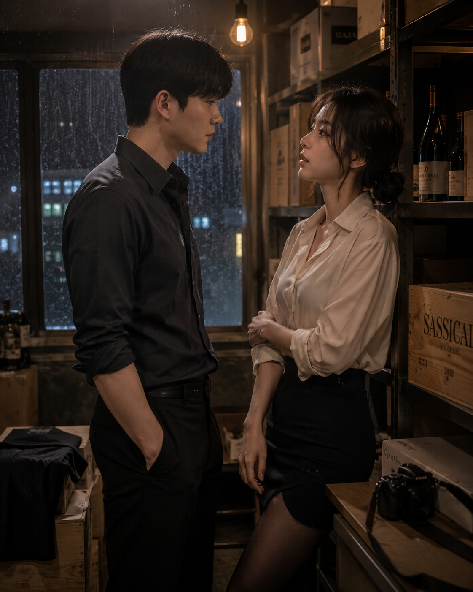

비가 오다 그친 종로 골목은 저녁이 되자 아스팔트 표면에 희미한 습기만 남겨 두고 있었다. 가게 문을 닫기까지 아직 한 시간이 남았지만 손님이 한꺼번에 빠져나간 뒤라 실내는 와인 잔 부딪는 소리 대신 냉장고 모터음만 낮게 깔려 있었다. 다온은 창가 쪽 바 테이블에 노트를 펼쳐 둔 채 마지막 문장을 붙잡고 있었고, 시안은 반쯤 내려간 셔터 틈으로 바깥을 한번 본 뒤 그녀 앞에 미지근한 물잔을 밀어 두었다.
다온"아직 안 가셨어요."
다온이 펜끝을 멈춘 채 물었다. 목소리는 평소처럼 고르게 정리돼 있었지만, 잔 옆으로 가지런히 모아 둔 손가락 끝이 생각보다 자주 움직였다.
시안"다온 씨도 아직 일하는 중이잖아요."
다온"저는 원고 마감이 있어서요."
시안"그럼 난 손님 없는 가게 정리 중이고."
다온은 그 말에 아주 잠깐 웃었다. 준비한 질문지를 따라갈 때보다, 예상 밖으로 힘을 빼는 대답을 들을 때 표정이 먼저 풀리는 사람이었다. 그녀가 노트를 덮고 카메라 스트랩을 손목에 감았다.
다온"낮에 편집장한테 전화가 왔어요. 반응이 좋으니까 한 번 더 쓰자고요."
시안"좋은 얘기 같은데."
다온"원하는 방향이 조금 달라요."
시안은 맞은편 의자를 빼서 앉았다. 다온은 잠시 눈을 들었다가 다시 테이블 위로 시선을 내렸다.
다온"사람들이 좋아할 만한 제목을 더 세게 뽑고, 사진도 가까운 걸 더 쓰고 싶대요. 공간이 아니라 관계를 팔아도 된다는 식으로요."
시안"그래서?"
다온"싫다고 했어요. 근데 완전히 끊을 수도 없고요."
그녀는 문장 끝을 낮게 눌렀다. 옳고 그름보다, 자기 기준을 지키려면 누군가에게 폐를 끼치는 쪽으로 보일까 봐 불편해하는 얼굴이었다. 시안은 물잔을 그녀 쪽으로 조금 더 밀었다.
시안"다온 씨가 싫으면 안 하면 되죠."
다온"그렇게 단순하게 말하는 사람 별로 없어요."
시안"복잡하게 말한다고 달라지진 않으니까."
다온은 그제야 잔을 들어 한 모금 마셨다. 마감에 쫓긴 사람 특유의 마른 숨이 조금 풀렸다. 카메라를 챙기며 일어서려던 그녀는 셔터 바깥에서 다시 굵어지는 빗소리에 발을 멈췄다.
시안"우산 없어요?"
다온"아까 올 때는 안 왔거든요."
시안"집까지 가려면 멀죠."
다온"홍대 쪽이니까요."
시안"그럼 조금 있다 가요."
거절할 명분을 찾는 기색이 잠깐 스쳤지만, 다온은 끝내 다시 앉았다. 시안은 주방 안쪽에서 남은 치즈와 바게트를 간단히 접시에 담아왔다. 다온은 처음에는 기사 취재를 핑계로 한두 번 젓가락을 들다가, 곧 정말 배가 고팠다는 듯 조용히 속도를 붙였다.
다온"이런 건 손님한테 안 내죠?"
시안"마감하는 사람한테만 내요."
다온"저를 손님으로 안 본다는 뜻인가요."
시안"그건 다온 씨가 정하면 되죠."
그녀는 빵을 잘라 들고 있다가 시안을 올려다봤다. 펜끝이 멈출 때와 비슷한 표정이었다. 질문을 던져 놓고도 답보다 자기 심장이 먼저 반응하는 순간. 창가 유리에 빗물이 길게 흘렀고, 가게 안 조명이 더 따뜻하게 내려앉았다.
다온"김시안 씨는 원래 사람을 이렇게 헷갈리게 해요?"
시안"헷갈려요?"
다온"선은 분명한데, 밀어내는 건 또 아니니까요."
시안은 웃지 않았다. 대신 그녀의 카메라를 손에서 받아 테이블 가장자리로 치워 두었다.
시안"다온 씨는 질문할 때보다 지금이 더 솔직하네요."
그 짧은 말에 다온의 숨이 눈에 띄게 얕아졌다. 그녀는 시선을 피하지 않으려는 듯 턱을 조금 들었지만, 귓가가 먼저 붉어졌다.
다온"취재 끝나면 원래 이래요."
시안"아니, 다 끝난 건 아닌 것 같은데."
잠깐의 침묵 뒤에 다온이 먼저 웃음을 접었다. 단정하게 정리된 사람이 스스로 흐트러지는 순간을 감추지 않기로 마음먹은 얼굴이었다.
다온"맞아요. 아직 안 끝났어요."
시안"뭐가."
다온"제가 왜 자꾸 여기로 돌아오는지 확인하는 거요."
시안은 그녀의 손목 가까이에 손을 얹었다. 깜짝 놀라 움찔했지만 다온은 빼지 않았다. 얇은 셔츠 소매 아래로 맥박이 가볍게 뛰고 있었다.
시안"그건 확인해 봐야겠네."
그녀의 입술이 아주 작게 떨렸다. 평소처럼 질문으로 넘기지 않고, 대답 대신 숨을 고르는 쪽을 택한 건 처음이었다. 시안이 가까워지자 다온은 한 번 눈을 감았다 뜬 뒤, 더 이상 물러서지 않았다.

다온"아까, 선이 분명한데 밀어내는 건 아니라더니."
다온이 말을 꺼냈다. 숨소리에 섞인 미세한 떨림이 휴게실의 정적을 가르고 있었다.
시안"맞아요. 지금도 그래요."
다온"그럼 이건 뭐예요."
시안"확인시켜 주는 거죠."
다온은 대답 대신 시안의 셔츠 앞자락을 더 세게 움켜잡았다. 평소 같으면 질문을 던졌을 순간이었지만, 지금은 묻는 대신 행동하고 싶었다. 그녀가 살짝 발돋움하자 시안이 허리를 숙여 그 움직임을 받았다.
입술이 겹쳐지는 순간, 다온의 어깨에서 힘이 빠졌다. 처음에는 살짝 스치듯 닿았다 떨어지는 가벼운 접촉이었다. 하지만 시안이 물러서지 않자, 다온은 자신의 입술을 다시 포갰다. 이번에는 조금 더 오래, 조금 더 깊게.
시안"숨 쉬어요, 다온 씨."
다온"쉬고 있어요."
다온"아니, 쉬는 것 같았는데."
시안의 손이 그녀의 허리께로 내려갔다. 셔츠 위로 얇은 손바닥의 온기가 스며들자 다온은 허리를 살짝 뒤로 젖혔다. 도망치는 움직임이 아니라, 더 닿고 싶은데 스스로 감당할 수 있을지 가늠하는 자세였다.
시안"무서워요?"
다온"무섭다기보다."
다온"기다렸다는 걸 인정하는 게 더 힘들어요."
그 말이 끝나자마자 시안은 그녀를 선반 쪽으로 천천히 밀었다. 등 뒤로 와인 박스가 놓인 나무 선반이 닿았고, 다온은 그 지지대에 몸을 기댔다. 시안의 오른손이 그녀의 뺨을 감싸고, 엄지가 광대뼈를 천천히 쓸었다.
시안"인정했으니까 이제 됐네요."
시안이 다시 고개를 숙였다. 이번 키스는 처음과 달랐다. 입술을 살짝 벌리고, 다온의 아랫입술을 빨아들였다. 다온의 입에서 짧은 숨이 새어 나왔다. "으응..." 목 깊은 곳에서 울린 소리가 휴게실 안에 낮게 퍼졌다.
시안의 혀가 그녀의 입술 틈을 밀고 들어왔다. 다온은 처음에는 굳어 있었지만, 곧 자신의 혀끝으로 조심스럽게 응답했다. 따뜻하고 부드러운 점막이 서로를 탐색하는 감촉에 그녀의 손가락이 시안의 어깨를 더 세게 움켜잡았다.
시안"다온 씨."
다온"네..."
시안"입 좀 더 벌려 봐요."
다온은 시키는 대로 했다. 평소 같으면 누군가의 지시를 이렇게까지 순순히 따르는 자신을 상상도 못 했겠지만, 지금은 시안의 목소리가 명령이 아니라 확인처럼 들렸다. 그녀가 입을 벌리자 시안의 혀가 더 깊숙이 들어왔다. 혀끝이 입천장을 스치고, 다온의 혀와 얽혔다. 따뜻한 침이 섞이고, 숨이 섞였다.
다온의 손이 시안의 목덜미로 올라갔다. 짧게 자른 머리카락이 손가락 사이로 스쳤다. 그녀는 시안의 머리를 자기 쪽으로 더 끌어당기며 키스에 적극적으로 응했다. 서로의 숨소리가 빨라지고, 입술이 떨어질 때마다 가느다란 침 줄이 이어졌다 끊어졌다.
시안"카메라 스트랩, 풀어도 돼요?"
다온"이미 풀었는데요."
시안"아니, 목에 걸린 거 말고."
다온"뭐... 아."
시안의 손가락이 그녀의 셔츠 단추로 향했다. 첫 번째 단추가 풀리자 쇄골이 드러났다. 두 번째, 세 번째. 다온은 숨을 참지 못하고 가볍게 들이켰다. 시안의 손놀림은 서두르지 않았고, 그 느림이 오히려 다온의 심장을 더 빠르게 뛰게 했다.
시안"숨 참지 말아요."
다온"참는 거 아니에요."
다온"그냥, 심장이 너무 빨리 뛰어서."
시안은 셔츠를 완전히 벗기지 않고 어깨만 드러나게 했다. 베이지 셔츠가 팔꿈치께로 흘러내렸고, 그 아래로 얇은 검정색 브래지어가 모습을 드러냈다. 다온은 본능적으로 팔을 가슴 앞으로 모으려다가, 시안의 시선을 마주하고 움직임을 멈췄다.
다온"부끄러운데."
시안"알아요."
다온"그걸 알면서."
시안"그래서 더 보고 싶어요."
시안은 그녀의 팔을 살며시 아래로 내렸다. 드러난 어깨선은 앙상하지 않으면서도 군더더기 없이 매끈했다. 쇄골을 따라 얇은 땀방울이 송골송골 맺혀 있었다. 시안의 손가락이 그 선을 따라 천천히 움직였다. 쇄골에서 어깨로, 어깨에서 팔뚝으로.
다온은 그 손길에 눈을 감았다. 시각을 차단하자 촉각이 더 선명해졌다. 시안의 손가락 끝이 닿는 곳마다 작은 전류가 흐르는 것 같았다. 그녀의 호흡이 점점 더 가빠졌다.
시안"여기, 예민하네요."
시안의 입술이 그녀의 목 옆선에 닿았다. 처음에는 살짝 스치듯, 그다음에는 혀끝으로 핥듯이. 다온의 목에서 가느다란 신음이 흘러나왔다.
다온"하아..."
시안"소리 더 내도 돼요."
다온"안 내는 게 아니에요."
다온"참는 것도 아니고."
다온"그냥, 소리가 이렇게밖에 안 나와요."
시안은 그녀의 목에서 쇄골로, 쇄골에서 가슴 위쪽으로 입술을 옮겼다. 브래지어 위로 살짝 드러난 살결에 입을 맞추자 다온의 몸이 미세하게 떨렸다. 시안의 손이 그녀의 등 뒤로 돌아가 브래지어 후크를 찾았다.
시안"풀어도 돼요?"
다온"그걸 물어보는 사람은 처음이에요."
시안"안 물어보는 사람들이 더 많다는 뜻이네."
다온"네."
다온"근데 물어보니까 더 떨려요."
시안은 그 대답에 살짝 웃으며 후크를 풀었다. 검은 천이 느슨해지며 앞으로 흘러내렸고, 다온은 자신의 가슴이 완전히 드러나는 걸 느꼈다. 그녀는 눈을 질끈 감았다. 부끄러움과 기대가 뒤섞인 표정이었다.
시안"예쁘네요."
다온"거짓말."
시안"거짓말 안 한다고 했잖아요."
시안의 손이 그녀의 가슴을 감쌌다. 처음에는 손바닥 전체로 부드럽게, 그다음에는 손가락으로 살결을 더듬었다. 다온의 가슴은 크지 않았지만 탄력이 있었고, 시안의 손바닥 안에 쏙 들어왔다. 엄지가 유두를 스치자 다온이 작게 몸을 움찔거렸다.
다온"응..."
시안"여기도 예민하네."
다온"당연하죠, 그런 데는."
시안은 엄지로 유두 주변을 천천히 원을 그리며 문질렀다. 처음에는 말랑하게 눌려 있던 유두가 점점 단단해지며 도드라졌다. 다온의 숨소리가 더 거칠어졌다. 그녀는 시안의 어깨를 잡은 손에 더 힘을 줬다.
시안"아파요?"
다온"아니요."
다온"아픈 건 아닌데."
다온"너무 느려서 미칠 것 같아요."
시안은 그 말에 살짝 웃으며 고개를 숙였다. 입술이 그녀의 유두에 닿자 다온은 짧은 비명을 삼켰다. 시안의 혀가 유두를 핥고, 입술로 살짝 빨아들였다.
다온"으응... 하아..."
다온"김시안 씨..."
시안"왜요."
다온"이름만... 부르라고 했잖아요."
시안"아직 편할 때가 아니에요?"
다온"지금은... 그냥... 시안 씨."
그녀가 이름을 부르는 순간, 시안은 유두를 더 세게 빨아들였다. 혀끝으로 굳어진 유두를 굴리고, 살짝 이로 물었다. 다온의 허리가 반사적으로 앞으로 밀려나왔다.
다온"아...! 하아아..."
시안"다온 씨."
다온"네...?"
시안"스커트 안으로 손 넣어도 돼요?"
다온은 바로 대답하지 못했다. 이미 충분히 젖어 있을 거라는 걸 본인도 알고 있었고, 시안도 눈치챘을 거라는 걸 알았다. 그걸 확인시키는 게 부끄러웠지만, 거절할 이유는 하나도 없었다.
다온"네..."
시안의 손이 그녀의 허벅지 바깥쪽을 타고 천천히 올라왔다. 스커트 아래로 손이 들어가자 다온은 다리를 살짝 오므렸다. 검정 스타킹 너머로 시안의 손가락이 허벅지 안쪽을 쓸었다.
시안"다리 좀 벌려 줄래요."
다온"부끄러워 죽겠어요."
시안"그래도 벌려야죠."
다온은 천천히 다리를 벌렸다. 시안의 손이 허벅지 안쪽을 타고 더 위로 올라갔다. 스타킹과 팬티 너머로 손가락이 닿자, 그녀는 자신이 생각보다 훨씬 더 젖어 있다는 걸 깨달았다. 시안의 손가락이 천을 사이에 두고 그 부위를 살짝 눌렀다.
다온"하아..."
시안"여기 많이 젖었네요."
다온"말하지 마요..."
시안"말하지 말고 확인하라는 거예요?"
다온"그런 뜻이 아니라..."
시안은 그녀의 말을 더 듣지 않고 팬티 위로 손가락을 움직였다. 젖은 천 너머로 음부의 형태가 그대로 느껴졌다. 손가락이 음순 사이를 따라 위아래로 움직일 때마다 다온의 허리가 작게 떨렸다.
다온"으... 응..."
시안"스타킹 벗겨도 돼요?"
다온"네..."
시안은 그녀의 스커트를 허리 위로 걷어 올렸다. 검정 스타킹이 드러나고, 그 아래로 짙은 색 팬티가 보였다. 시안은 스타킹과 팬티를 함께 천천히 끌어내렸다. 다온은 숨을 들이키며 선반에 더 기댔다.
스타킹이 무릎까지 내려가자 시안은 더 이상 벗기지 않고 그 상태로 멈췄다. 다온의 음모가 드러났다. 단정하게 정리된 검은 털 사이로 붉게 물든 살결이 엿보였다. 시안의 손가락이 직접 닿자 다온은 작게 몸을 떨었다.
시안"따뜻하네요."
다온"그런... 말 하지 마요..."
시안"사실대로 말하는 건데."
시안의 손가락이 음순을 벌리고 안쪽으로 들어갔다. 애액이 손가락을 적시며 끈적이는 소리가 났다. 다온은 입술을 깨물며 신음을 삼켰다. 시안의 손가락이 천천히 안쪽으로 밀고 들어왔다.
다온"으응...!"
시안"아파요?"
다온"아니요... 그냥... 들어오는 게 느껴져서..."
시안은 손가락을 천천히 움직였다. 질벽이 손가락을 조여왔다. 따뜻하고 부드러운 살결이 손가락을 감싸는 감촉이 선명했다. 시안은 손가락을 안쪽으로 더 밀어 넣었다가 빼는 동작을 반복했다.
다온"하아... 하아아..."
시안"어때요."
다온"좋아요... 근데..."
다온"더... 해 줘요."
시안은 그녀의 요청에 손가락의 속도를 조금 높였다. 질 안에서 손가락이 움직일 때마다 젖은 소리가 휴게실 안에 작게 울렸다. 다온은 선반을 등 뒤에 기댄 채 허리를 조금씩 움직이며 손가락의 움직임에 맞췄다.
시안의 다른 손이 다시 그녀의 가슴으로 올라갔다. 유두를 손가락 사이에 끼우고 살짝 비틀자 다온의 몸이 크게 떨렸다.
다온"아...! 거기...!"
시안"여기랑."
다온"으응...!"
시안"여기."
다온"하아아...!"
시안은 질 안에서 손가락을 구부려 윗벽을 자극하면서 동시에 엄지로 클리토리스를 문질렀다. 다온의 허리가 크게 들썩였다. 그녀는 시안의 어깨를 더 세게 움켜잡으며 숨을 몰아쉬었다.
다온"안 돼... 그렇게 하면..."
시안"가도 돼요."
다온"아직... 아직은..."
시안"왜요."
다온"더... 느끼고 싶어서..."
시안은 그녀의 말에 손가락의 움직임을 늦췄다. 대신 천천히, 아주 천천히 질 안을 탐색하듯 손가락을 움직였다. 다온의 질벽이 손가락을 꽉 조여왔다. 따뜻한 애액이 손가락을 타고 흘러내렸다.
시안"그럼 천천히."
다온"네..."
다온"근데 그게 더... 느껴져요..."
시안"뭐가."
다온"시안 씨 손가락이... 안에서 움직이는 게 다 느껴져서..."
시안은 그녀의 말에 살짝 숨을 들이켰다. 평소에는 차분하고 절제된 말투로 질문을 던지던 사람이 지금은 눈앞에서 숨을 헐떡이며 자신의 손가락을 받아들이고 있었다. 그 차이가 시안의 심장을 더 빠르게 뛰게 했다.
시안은 고개를 숙여 다시 그녀의 가슴에 입을 맞췄다. 유두를 입에 물고 혀로 굴리면서 손가락은 계속해서 질 안을 천천히 움직였다. 이중 자극에 다온의 몸이 떨렸다.
다온"아... 시안 씨...!"
시안"말해 봐요. 뭐가 좋은지."
다온"그런 거... 말 못 해요..."
시안"못 하는 거랑 안 하는 건 달라요."
다온"부끄럽다고요..."
시안은 대답 대신 손가락을 더 깊이 밀어 넣었다. 질벽을 살짝 벌리며 들어간 손가락이 안쪽 깊은 곳까지 닿았다. 다온은 짧은 비명을 지르며 허리를 떨었다.
다온"거기... 깊어요..."
시안"아파요?"
다온"아니요... 이상해요... 너무 깊어서..."
시안"싫어요?"
다온"싫진 않아요... 그냥... 낯설어서..."
시안은 손가락을 천천히 빼내다가 다시 밀어 넣었다. 이번에는 조금 더 빠르게. 다온의 질 안이 손가락의 움직임에 맞춰 경련하듯 조여왔다. 애액이 더 많이 흘러나와 시안의 손바닥을 적셨다.
시안"더 빨리할까요."
다온"네... 제발..."
시안은 손가락의 속도를 높였다. 질 안에서 손가락이 움직일 때마다 젖은 소리가 더 크게 울렸다. 동시에 엄지로 클리토리스를 더 세게 문질렀다. 다온은 더 이상 말을 잇지 못하고 신음만 흘렸다.
다온"으응... 하아... 하아아...!"
시안"갈 것 같아요?"
다온"네... 네...!"
다온"갈 것 같아요...!"
시안은 그녀의 말에 손가락을 더 깊이 밀어 넣으며 속도를 최대로 높였다. 질벽이 손가락을 강하게 조여왔다. 다온의 온몸이 떨렸다. 그녀는 시안의 어깨를 잡은 손에 힘을 꽉 주며 허리를 앞으로 밀었다.
다온"아...! 아아...! 시안 씨...!"
시안"가요, 다온 씨."
다온"가... 가요...! 으으응...!"
그녀의 몸이 활처럼 휘었다. 질 안이 격렬하게 경련하며 시안의 손가락을 강하게 조여왔다. 애액이 손가락을 타고 흘러내렸다. 다온은 몇 번 더 짧게 몸을 떨다가 천천히 선반에 몸을 기댔다.
다온"하아... 하아..."
시안"괜찮아요?"
다온"네... 잠깐만..."
시안은 그녀의 질 안에서 손가락을 천천히 빼냈다. 손가락이 빠져나오자 다온은 작게 몸을 움찔거렸다. 시안의 손가락은 그녀의 애액으로 반짝이고 있었다.
다온은 한동안 숨을 고르며 선반에 기대어 있었다. 다리는 여전히 스타킹이 무릎까지 내려간 상태였고, 스커트는 허리 위로 걷혀 있었다. 셔츠는 어깨가 드러난 채 팔꿈치에 걸려 있었다. 그녀는 자신의 상태를 깨닫고 천천히 옷을 정리하기 시작했다.
다온"이런 모습 보여주기 싫었는데."
시안"어떤 모습."
다온"정리 안 된 모습이요."
시안"지금도 충분히 정리돼 있어요."
다온"거짓말."
시안"거짓말 안 한다니까요."
다온은 그 말에 작게 웃었다. 아직 숨이 완전히 가라앉지 않아 웃음이 약간 떨렸다. 그녀는 스타킹을 다시 올리고 스커트를 내렸다. 셔츠 단추를 채우려는데 손이 조금 떨려서 첫 번째 단추를 두 번이나 놓쳤다.
시안"내가 할까요."
다온"아니요. 이것까지 해 주면 정말 못 헤어날 것 같아서."
창밖으로 다시 빗소리가 굵어지고 있었다. 하지만 휴게실 안의 공기는 더 이상 쌀쌀하지 않았다. 낮은 전구 불빛이 두 사람의 그림자를 하나로 합쳐 벽에 비추고 있었다.
휴게실 문이 다시 열렸을 때 빗소리는 조금 잦아들어 있었다. 다온은 풀렸던 머리카락을 손으로 대충 정리한 채 벽에 등을 기대고 한동안 숨을 고르고 있었다. 시안이 그녀의 카메라를 다시 손에 쥐여 주자, 다온은 그 스트랩을 바로 목에 걸지 못하고 손가락에 몇 번 감았다 풀었다.
다온"이건 기사에 못 쓰겠네요."
시안"쓰고 싶었어요?"
다온"아니요."
대답은 즉시 나왔지만, 뒤이어 따라온 웃음은 꽤 늦었다. 그녀는 자신의 목소리가 낯선 듯 한번 입술을 다물었다가 다시 열었다.
다온"다만 이제 뭘 쓰든 조금 달라질 것 같아요."
시안"거짓말만 안 쓰면 되죠."
다온"그건 원래도 안 했어요."
시안"그럼 됐네."
다온은 그런 식으로 정리되는 말을 싫어해야 맞았다. 그런데 지금은 그 담백함 덕분에 더 숨고 싶지 않았다. 그녀가 가방을 챙기다 말고 다시 시안을 바라봤다.
다온"다음엔 취재 핑계 없이 와도 돼요?"
시안"굳이 핑계가 필요하면 만들고."
다온"없으면요."
시안"그냥 오면 되죠."
그녀는 짧게 고개를 끄덕였다. 내려가는 계단이 가파른데도 발끝이 아까보다 덜 조심스러웠다. 셔터를 올리고 바깥으로 나가려던 순간, 다온은 한 번 더 돌아섰다.
다온"김시안 씨."
시안"왜요."
다온"다음엔 이름만 불러도 돼요?"
시안은 잠시 그녀를 보다가 문고리를 쥔 손을 놓았다.
시안"그건 다온 씨가 더 편할 때 바꾸죠."
그녀는 바로 대답하지 못했다. 대신 우산도 없이 비 냄새가 남은 골목으로 나가기 직전, 조금 전보다 분명히 풀어진 얼굴로 웃었다. 오늘 바뀐 건 호칭이 아니라 선의 위치였고, 다온은 그 사실을 오래 들여다볼 사람처럼 보였다.